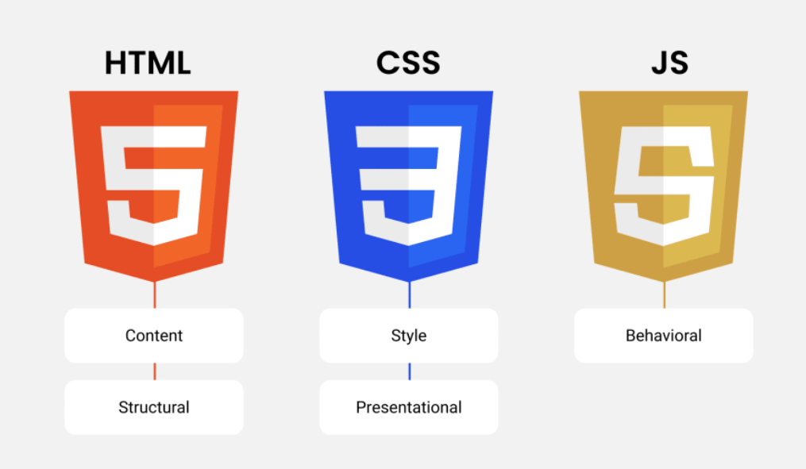

Frontend Roadmap for 2024 |👨💻
Front-end web development : is the process of designing and
building the
Graphical user interface (GUI)
of any website. Sometimes called client-side development, front-end
development refers to the development of the parts of a website the user
interacts with, such as buttons and text boxes. We usually perform
front-end development using
HTML ,
CSS and
JavaScript.

- HTML : HTML stands for HyperText Markup Language. It is the standard markup language used to create web pages. HTML is a combination of Hypertext and Markup language. Hypertext defines the link between web pages. A markup language is used to define the text document within the tag to define the structure of web pages.
- CSS : CSS (Cascading Style Sheets) is a simply designed language intended to simplify the process of making web pages presentable. CSS allows you to apply styles to HTML documents. It describes how a webpage should look. It prescribes colors, fonts, spacing, etc. In short, you can make your website look however you want. CSS lets developers and designers define how it behaves, including how elements are positioned in the browser.

- Inline CSS
- Internal or Embedded CSS
- External CSS
- JAVASCRIPT : JavaScript is a lightweight, cross-platform, single-threaded, and interpreted compiled programming language. It is also known as the scripting language for webpages. It is well-known for the development of web pages, and many non-browser environments also use it.
- Vanila Js
- JQuery (Library)
- React Js (Framework)
- Angular Js (Framework)
- Vue Js (Framework)
- TypeScript (Preprocessor)